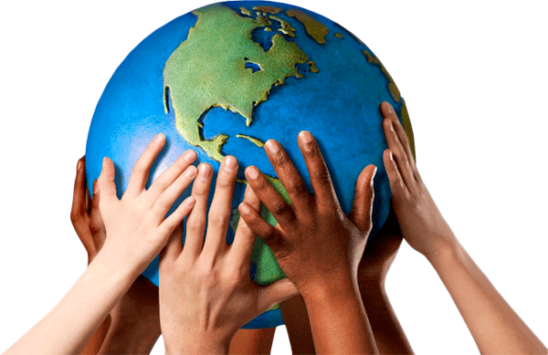
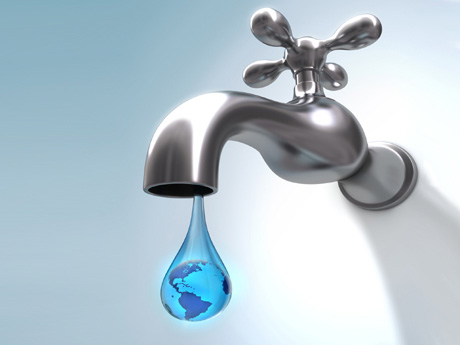
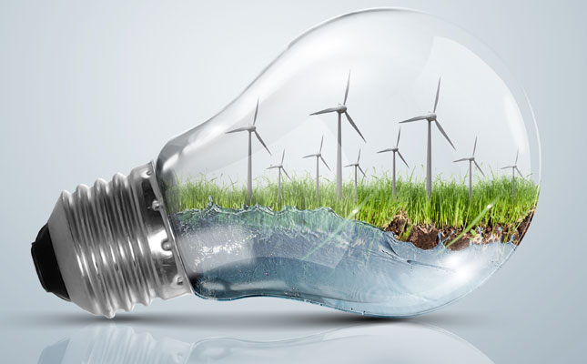
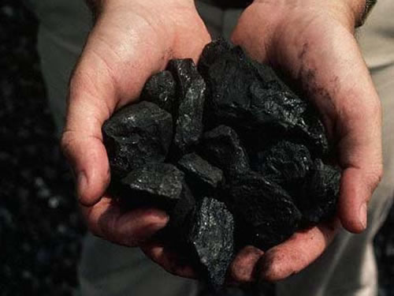

Sustentabilidade
O acolhimento de ações de sustentabilidade garantem o médio e longo prazo de um planeta em boas condições para desenvolvimento das diversas formas de vida, inclusive a humana, garante os recursos naturais que são essenciais para as gerações futuras, ajudando na manutenção dos recursos naturais: florestas, matas, rios e lagos e oceanos.
Ações Sustentavéis

"Iniciativas voltadas para o consumo ponderado da água, evitando ao extremo o desperdício, adoção de medidas que mostrem a não poluição de recursos hídricos, assim como a limpeza daqueles que se encontram poluidos ou contaminados."

"Utilização das seguintes fontes de energia limpas e renováveis: eólica, geotérmica e hidráulica, para amenizar o consumo de combustíveis fósseis, contudo garantimos não só a preservação e as reservas de recursos minerais mas também visamos a diminuição da poluição do ar."

"Utilização dos seguintes recursos: minerais petróleo, carvão, e minério, de forma ponderada, racionalizada e com planejamento."

"Utilização dos recursos naturais de florestas e matas de forma que não as prejudique, garantindo que sejam replantadas sempre que necessário. "

"Atitudes que fixem a ideia de produção e consumo de alimentos orgânicos, todavia os mesmos não agridem nosso meio ambiente além de fornecerem benefícios a nossa saúde."